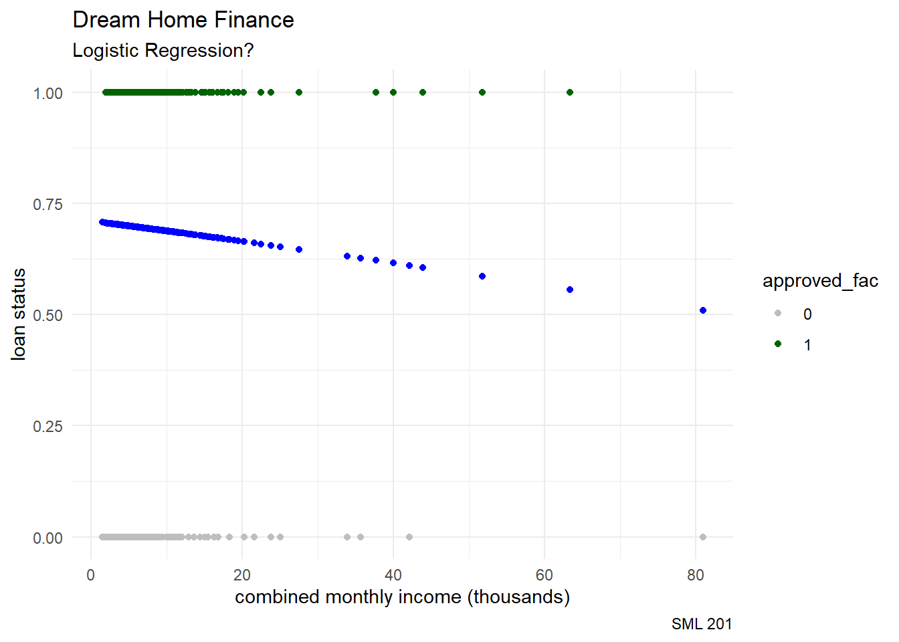
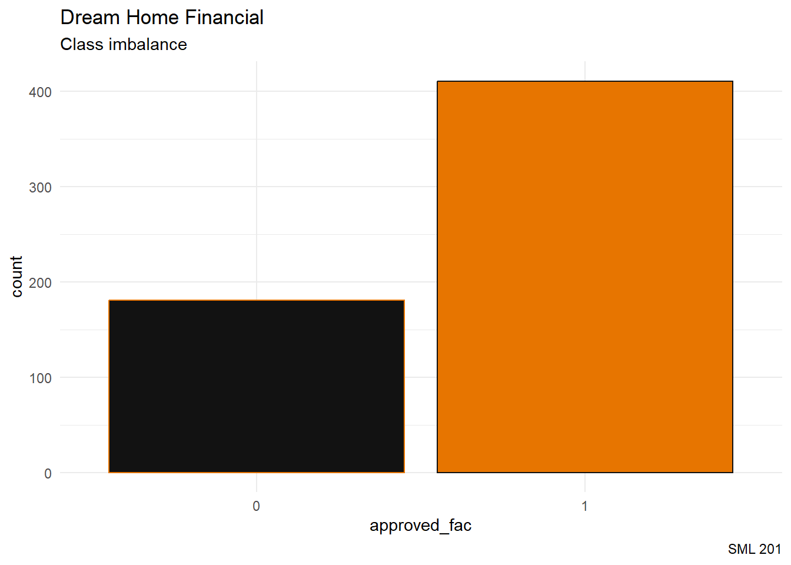
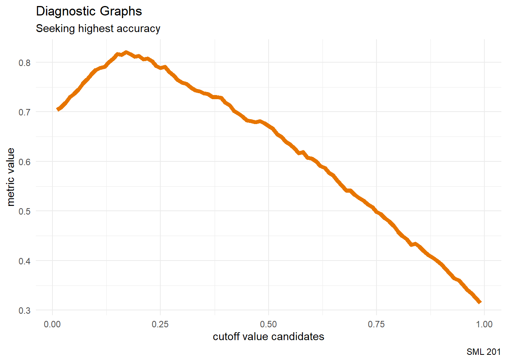

library("janitor") #tools for data cleaning
library("tidyverse") #tools for data wrangling and visualization
princeton_orange <- "#E77500"
princeton_black <- "#121212"SML 201
Start
Goal: Classify Binary Responses
Objectives:
- define classification
- carry out logistic regression

Notecode packages
loan_df <- readr::read_csv("loan_data_set.csv") |>
janitor::clean_names()Data
“Dream Housing Finance company deals in all home loans. They have presence across all urban, semi urban and rural areas. Customer first apply for home loan after that company validates the customer eligibility for loan.”
- Source: Kaggle

“Company wants to automate the loan eligibility process (real time) based on customer detail provided while filling online application form. These details are Gender, Marital Status, Education, Number of Dependents, Income, Loan Amount, Credit History and others. To automate this process, they have given a problem to identify the customers segments, those are eligible for loan amount so that they can specifically target these customers. Here they have provided a partial data set.”
We will try to predict the loan status (i.e. categorical variable)
- Loan status: Yes (Y) or No (N)
- Gender (of primary applicant)
- Marital status (of primary applicant)
- Dependents
- Education
- Self-employed
- Applicant income (monthly, in dollars)
- Co-applicant income (monthly, in dollars)
- loan amount terms (in months)
- Credit history
- Property area
Cleaning
remove rows that have missing values in the response variable (
loan_amount)convert
dependentsto a numerical variable- here, replace “+” with nothing
combine “income” columns
- ensure all dollar amounts are in the same units (thousands of dollars)
convert
credit_historyto a factor variable (i.e. categorical)retain relevant columns
loan_df <- loan_df |>
filter(!is.na(loan_amount)) |>
mutate(dependents_num = as.numeric(
str_replace(dependents, "\\+", "")
)) |>
mutate(income = applicant_income/1000 + coapplicant_income/1000) |>
mutate(credit_history = factor(credit_history)) |>
select(loan_amount, income, dependents_num, gender, married, education, self_employed, credit_history, property_area, loan_status)After cleaning the data, we should report the size of the resultant data frame
nrow(loan_df) #number of observations[1] 592ncol(loan_df) #number of variables[1] 10and the structure of the data frame.
str(loan_df, give.attr = FALSE)tibble [592 × 10] (S3: tbl_df/tbl/data.frame)
$ loan_amount : num [1:592] 128 66 120 141 267 95 158 168 349 70 ...
$ income : num [1:592] 6.09 3 4.94 6 9.61 ...
$ dependents_num: num [1:592] 1 0 0 0 2 0 3 2 1 2 ...
$ gender : chr [1:592] "Male" "Male" "Male" "Male" ...
$ married : chr [1:592] "Yes" "Yes" "Yes" "No" ...
$ education : chr [1:592] "Graduate" "Graduate" "Not Graduate" "Graduate" ...
$ self_employed : chr [1:592] "No" "Yes" "No" "No" ...
$ credit_history: Factor w/ 2 levels "0","1": 2 2 2 2 2 2 1 2 2 2 ...
$ property_area : chr [1:592] "Rural" "Urban" "Urban" "Urban" ...
$ loan_status : chr [1:592] "N" "Y" "Y" "Y" ...Categorical Response
As implied at the beginning, we want to now shift our goal to classifying whether or not a loan application was approved.
TipSupervised Machine Learning
If the response variable is …
- numerical \(\rightarrow\) regression task
- categorical \(\rightarrow\) classification task
One-Hot Encoding
loan_df <- loan_df |>
mutate(approved = ifelse(loan_status == "Y", 1, 0),
approved_fac = factor(approved,
levels = c(0,1)))Scatterplot
loan_df |>
ggplot(aes(x = income, y = approved)) +
geom_point(aes(color = approved_fac)) +
geom_smooth(formula = "y ~ x",
method = "lm",
se = FALSE) +
labs(title = "Dream Home Finance",
subtitle = "Linear Regression?",
caption = "SML 201",
x = "combined monthly income (thousands)",
y = "loan status") +
scale_color_manual(values = c("gray", "darkgreen")) +
theme_minimal()
Logistic Function
- domain: \((-\infty, \infty)\)
- range: \((0,1)\)
- one-to-one and invertible
WarningDCP1
Logistic Regression
# generalized linear model
mod6 <- glm(approved_fac ~ income,
data = loan_df,
family = "binomial")Logistic Fit
loan_df <- loan_df |>
mutate(preds6 = predict(mod6,
data.frame(income = loan_df$income),
type = "response"))loan_df |>
select(income, approved_fac, preds6) |>
head(20)Scatterplot
loan_df |>
ggplot(aes(x = income, y = approved)) +
geom_point(aes(color = approved_fac)) +
geom_point(aes(x = income, y = preds6),
color = "blue") +
labs(title = "Dream Home Finance",
subtitle = "Logistic Regression?",
caption = "SML 201",
x = "combined monthly income (thousands)",
y = "loan status") +
scale_color_manual(values = c("gray", "darkgreen")) +
theme_minimal()
Metric
cutoff <- median(loan_df$preds6, na.rm = TRUE)
loan_df <- loan_df |>
mutate(pred_class = ifelse(preds6 > cutoff, 1, 0))loan_df |>
select(income, approved_fac, preds6) |>
head(20)loan_df |>
janitor::tabyl(approved_fac, pred_class) approved_fac 0 1
0 88 93
1 208 203\[\text{accuracy} = \frac{88 + 203}{88 + 93 + 208 + 203} \approx 0.4916\]
So far, this automated system would classify the loan applications correctly about 49 percent of the time—not better than flipping a coin!
# accuracy, the R way
mean(loan_df$approved_fac == loan_df$pred_class, na.rm = TRUE)[1] 0.4915541Baseline Model
When forming a classification task, we advise setting a baseline model that simply predicts the most common category.
Bar Plot
loan_df |>
ggplot(aes(x = approved_fac, )) +
geom_bar(aes(color = approved_fac,
fill = approved_fac),
stat = "count") +
labs(title = "Dream Home Financial",
subtitle = "Class imbalance",
caption = "SML 201") +
scale_color_manual(values = c(princeton_orange, princeton_black)) +
scale_fill_manual(values = c(princeton_black, princeton_orange)) +
theme_minimal() +
theme(legend.position = "none")
loan_df |>
tabyl(approved_fac) |>
adorn_pct_formatting() approved_fac n percent
0 181 30.6%
1 411 69.4%Majority Classifier
loan_df <- loan_df |>
mutate(always_approve = 1)loan_df |>
select(income, approved_fac, always_approve) |>
head(20)Metric
mean(loan_df$approved_fac == loan_df$always_approve)[1] 0.6942568
NoteImproving from the Baseline
If this simple strategy is correct 69.4 percent of the time, any future machine learning model should achieve an accuracy level that is higher than 69.4 percent.
WarningDCP2
Extended Model
# generalized linear model
mod7 <- glm(approved_fac ~ income + dependents_num + credit_history +
education + property_area + loan_amount,
data = loan_df,
family = "binomial")Logistic Fit
explanatory_vars <- c("income", "dependents_num", "credit_history", "education", "property_area", "loan_amount")
loan_df <- loan_df |>
mutate(preds7 = predict(mod7,
loan_df |> select(all_of(explanatory_vars)),
type = "response"))cutoff <- median(loan_df$preds7, na.rm = TRUE)
loan_df <- loan_df |>
mutate(pred_class = ifelse(preds7 > cutoff, 1, 0))Metric
loan_df |>
filter(!is.na(pred_class)) |>
janitor::tabyl(approved_fac, pred_class) approved_fac 0 1
0 127 36
1 138 229\[\text{accuracy} = \frac{127 + 229}{127 + 36 + 138 + 229} \approx 0.6717\]
So far, this automated system would classify the loan applications correctly about 67 percent of the time
- better than random guessing
- worse than (baseline) majority classifier
Hyperparameters
NoteParameter Terminology
- parameters are values (such as regression coefficients) that are determined from machine learning training
- hyperparameters are values that are manually set by the machine learning analyst
Confusion Matrics
cutoff <- median(loan_df$preds7, na.rm = TRUE)
model_findings <- loan_df |>
mutate(pred_class = ifelse(preds7 > cutoff, 1, 0)) |>
select(approved_fac, pred_class) |>
mutate(outcome = case_when(
approved_fac == "1" & pred_class == 1 ~ "true positive",
approved_fac == "0" & pred_class == 1 ~ "false positive",
approved_fac == "1" & pred_class == 0 ~ "false negative",
approved_fac == "0" & pred_class == 0 ~ "true negative",
TRUE ~ "unknown classification"
))TP <- sum(model_findings$outcome == "true positive")
TN <- sum(model_findings$outcome == "true negative")
FP <- sum(model_findings$outcome == "false positive")
FN <- sum(model_findings$outcome == "false negative")print(paste0("There were ", TP, " true positives"))[1] "There were 229 true positives"print(paste0("There were ", TN, " true negatives"))[1] "There were 127 true negatives"print(paste0("There were ", FP, " false positives"))[1] "There were 36 false positives"print(paste0("There were ", FN, " false negatives"))[1] "There were 138 false negatives"precision = TP / (TP + FP)
print(round(precision, 2))[1] 0.86recall = TP / (TP + FN)
print(round(recall, 2))[1] 0.62accuracy = mean(model_findings$approved_fac == model_findings$pred_class, na.rm = TRUE)
print(round(accuracy, 2))[1] 0.67Hyperparmeter Tuning
Grid Search
Instead of how I assumed that the cutoff theshold should be at the median of the preds values, what if we tried out many different candidates for the cutoff threshold? We proceed to compute the precision, recall, and accuracy for each candidate.
cutoff_vals <- 1:99 / 100
vec_length <- length(cutoff_vals)
precision_vals <- rep(NA, vec_length)
recall_vals <- rep(NA, vec_length)
accuracy_vals <- rep(NA, vec_length)
for(iter in 1:99){
cutoff <- quantile(loan_df$preds7,
cutoff_vals[iter],
na.rm = TRUE)
model_findings <- loan_df |>
mutate(pred_class = ifelse(preds7 > cutoff, 1, 0)) |>
select(approved_fac, pred_class) |>
mutate(outcome = case_when(
approved_fac == "1" & pred_class == 1 ~ "true positive",
approved_fac == "0" & pred_class == 1 ~ "false positive",
approved_fac == "1" & pred_class == 0 ~ "false negative",
approved_fac == "0" & pred_class == 0 ~ "true negative",
TRUE ~ "unknown classification"
))
TP <- sum(model_findings$outcome == "true positive")
TN <- sum(model_findings$outcome == "true negative")
FP <- sum(model_findings$outcome == "false positive")
FN <- sum(model_findings$outcome == "false negative")
precision_vals[iter] = TP / (TP + FP)
recall_vals[iter] = TP / (TP + FN)
accuracy_vals[iter] = mean(
model_findings$approved_fac == model_findings$pred_class,
na.rm = TRUE)
}Diagnostic Graphs
data.frame(cutoff_vals, precision_vals, recall_vals) |>
ggplot() +
geom_line(aes(x = cutoff_vals, precision_vals),
color = "blue", linewidth = 2) +
geom_line(aes(x = cutoff_vals, recall_vals),
color = "red", linewidth = 2) +
labs(title = "Diagnostic Graphs",
subtitle = "Precision in blue, recall in red",
caption = "SML 201",
x = "cutoff value candidates",
y = "metric value") +
theme_minimal()
data.frame(cutoff_vals, precision_vals, recall_vals) |>
ggplot() +
geom_line(aes(x = cutoff_vals, accuracy_vals),
color = princeton_orange, linewidth = 2) +
labs(title = "Diagnostic Graphs",
subtitle = "Seeking highest accuracy",
caption = "SML 201",
x = "cutoff value candidates",
y = "metric value") +
theme_minimal()
Optimum
optimal_cutoff <- cutoff_vals[which.max(accuracy_vals)]Best Model
cutoff <- optimal_cutoff
loan_df <- loan_df |>
mutate(pred_class = ifelse(preds7 > cutoff, 1, 0))loan_df |>
filter(!is.na(pred_class)) |>
janitor::tabyl(approved_fac, pred_class) approved_fac 0 1
0 65 98
1 7 360\[\text{accuracy} = \frac{65 + 360}{65 + 98 + 7 + 360} \approx 0.8019\]
#accuracy
mean(loan_df$approved_fac == loan_df$pred_class,
na.rm = TRUE)[1] 0.8018868This optimal model achieved about 80 percent accuracy
- better than the baseline model
- with nearly instant calculations
WarningDCP3
Predictions
Picture a local resident who makes $5k per month (without a college education), has three dependents, has no credit history, and is seeking a $250k loan for a house in a rural area. Our model says …
applicant_1 <- data.frame(income = 5,
dependents_num = 3,
credit_history = "0",
education = "Not Graduate",
property_area = "Rural",
loan_amount = 250)
this_prediction <- predict(mod7,
applicant_1,
type = "response")
print(paste0("The computer model says that we should ",
ifelse(this_prediction > optimal_cutoff, "approve", "reject"),
" this application."))[1] "The computer model says that we should reject this application."Picture a Princeton graduate who makes $10k per month, has two dependents, has good credit, and is seeking a $500k loan for a house in an urban area. Our model says …
applicant_2 <- data.frame(income = 10,
dependents_num = 2,
credit_history = "1",
education = "Graduate",
property_area = "Urban",
loan_amount = 500)
this_prediction <- predict(mod7,
applicant_2,
type = "response")
print(paste0("The computer model says that we should ",
ifelse(this_prediction > optimal_cutoff, "approve", "reject"),
" this application."))[1] "The computer model says that we should approve this application."Beyond the Binary
TipWhat if the categorical response has more than two levels?
In later machine learning classes, you will encounter
- support vector machines
- random forests
Take SML 301 next semester!
Quo Vadimus?
This week:
- Precept 5
- Read Chapter 6
Exam 1: March 5
Refer to weekly announcement for more info

- image source: Up and Out Comics
Footnotes
Note(optional) Additional Resources
NoteSession Info
sessionInfo()R version 4.5.2 (2025-10-31 ucrt)
Platform: x86_64-w64-mingw32/x64
Running under: Windows 10 x64 (build 19045)
Matrix products: default
LAPACK version 3.12.1
locale:
[1] LC_COLLATE=English_United States.utf8
[2] LC_CTYPE=English_United States.utf8
[3] LC_MONETARY=English_United States.utf8
[4] LC_NUMERIC=C
[5] LC_TIME=English_United States.utf8
time zone: America/New_York
tzcode source: internal
attached base packages:
[1] stats graphics grDevices utils datasets methods base
other attached packages:
[1] lubridate_1.9.4 forcats_1.0.0 stringr_1.5.1 dplyr_1.1.4
[5] purrr_1.1.0 readr_2.1.5 tidyr_1.3.1 tibble_3.3.0
[9] ggplot2_4.0.0 tidyverse_2.0.0 janitor_2.2.1
loaded via a namespace (and not attached):
[1] generics_0.1.4 lattice_0.22-7 stringi_1.8.7 hms_1.1.3
[5] digest_0.6.37 magrittr_2.0.3 evaluate_1.0.4 grid_4.5.2
[9] timechange_0.3.0 RColorBrewer_1.1-3 fastmap_1.2.0 Matrix_1.7-4
[13] jsonlite_2.0.0 mgcv_1.9-3 scales_1.4.0 cli_3.6.5
[17] rlang_1.1.6 crayon_1.5.3 splines_4.5.2 bit64_4.6.0-1
[21] withr_3.0.2 yaml_2.3.10 tools_4.5.2 parallel_4.5.2
[25] tzdb_0.5.0 vctrs_0.6.5 R6_2.6.1 lifecycle_1.0.4
[29] snakecase_0.11.1 htmlwidgets_1.6.4 bit_4.6.0 vroom_1.6.5
[33] pkgconfig_2.0.3 pillar_1.11.0 gtable_0.3.6 glue_1.8.0
[37] xfun_0.52 tidyselect_1.2.1 rstudioapi_0.17.1 knitr_1.50
[41] farver_2.1.2 nlme_3.1-168 htmltools_0.5.8.1 labeling_0.4.3
[45] rmarkdown_2.29 compiler_4.5.2 S7_0.2.0